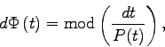
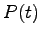
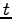
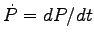
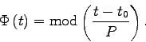
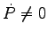
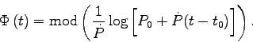
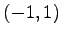

- Transforming HJD to phases: the transformation of heliocentric julian date (t) to phase is done by solving the differential equation:

where  is the period, which might or might not be a function of . If
 is 0, then integrating that equation yields:

If, on the other hand, , we obtain:

In C, the division moduo is obtained by function fmod, which returns the value on the interval , so to obtain desired phases set in plotting windows, simple interval mapping with optional aliasing is applied.